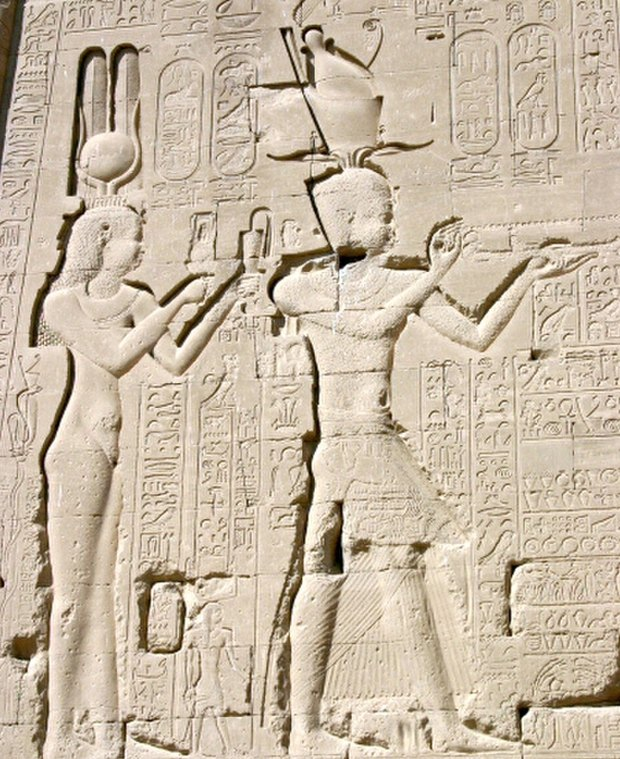
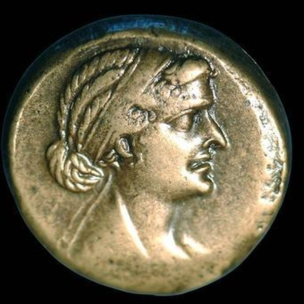
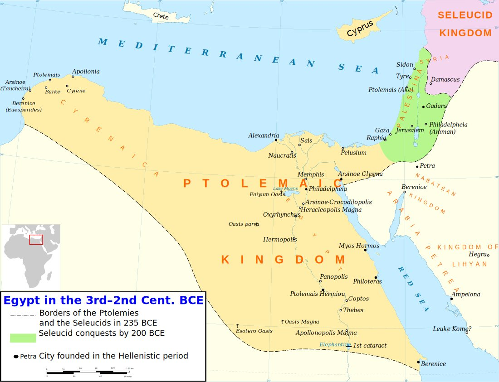
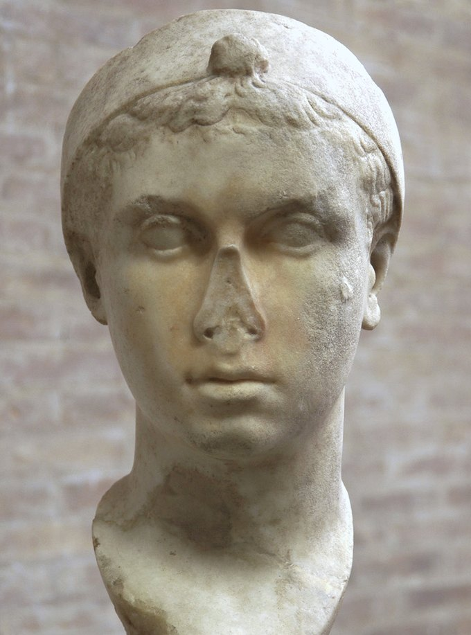
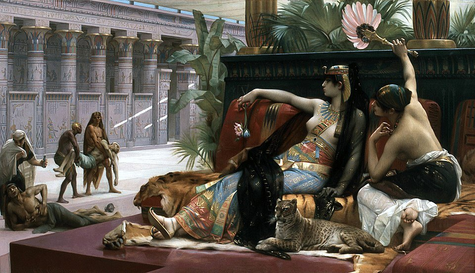
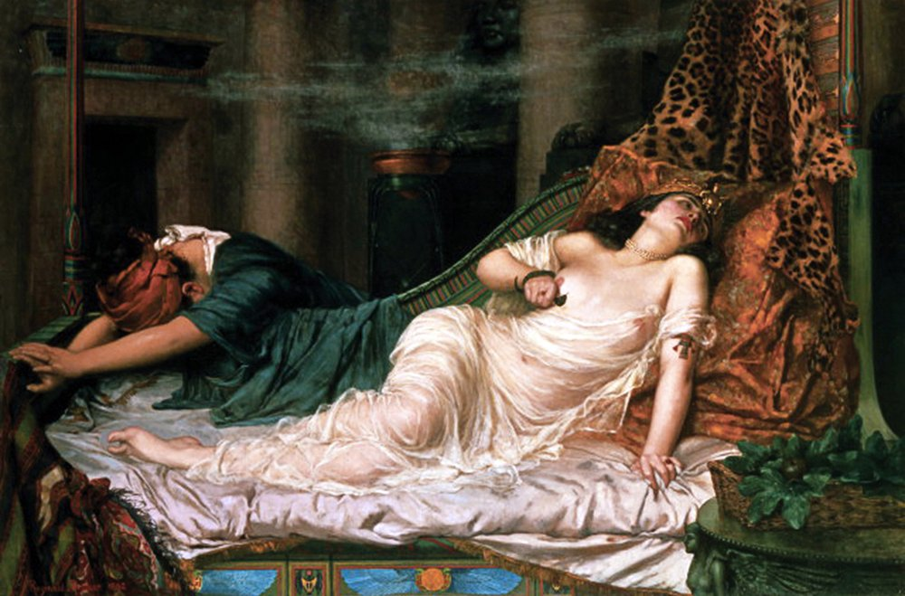

Bir tarihçi için Kleopatra hakkındaki en rahatsız edici gerçek şudur: onu hiç duymadık. Hakkında binlerce kitap, yüzlerce tablo, onlarca film var ama onun ağzından çıkmış tek bir cümleye sahip değiliz. Mektupları kayboldu, konuşmaları kaydedilmedi.
Elimizdeki en ayrıntılı kaynak, Yunan yazar Plutarkhos'un Marcus Antonius biyografisidir. Plutarkhos bu metni, anlattığı olaylardan yaklaşık bir buçuk asır sonra, Augustus'un kurduğu imparatorluğun içinden yazdı. Kleopatra'yı ne gördü ne de duydu. Bugün “Kleopatra” dediğimizde çoğumuzun aklına gelen sahnelerin neredeyse tamamı, iyi bir hikâye anlatıcısı olan bu adamın kaleminden çıkmıştır.
Kleopatra'yı çoğu zaman bir Mısırlı olarak hayal ederiz, oysa ailesinin kökü Makedonya'ydı. MÖ 323'te Büyük İskender öldüğünde generallerinden Ptolemaios Mısır'ı aldı ve kendini firavun ilan ederek yaklaşık üç yüzyıl sürecek bir hanedan kurdu.
Ptolemaioslar İskenderiye'de Yunanca konuşan, Yunan felsefesi ve bilimiyle yaşayan bir saray kurdular. Tapınak duvarlarında ise geleneksel firavun kıyafetleriyle, Mısır tanrılarına adak sunarken resmedildiler. Hanedanın iki yüzü vardı: sarayda Grek, tapınakta Mısırlı. Aile içi evlilikler de gelenekti. Kardeşler evlenir, isimler kuşaktan kuşağa aynen aktarılırdı ve tahta giden yol çoğu zaman bir kardeşin mezarından geçerdi.

Kleopatra MÖ 69 kışında İskenderiye'de doğdu. Babası XII. Ptolemaios, tahtını Roma'ya borçlanarak ayakta tutmaya çalışan zayıf bir kraldı; dinsel törenlerde flüt çalmayı sevdiği için “Auletes”, yani Flütçü diye anılırdı. Annesinin kim olduğu ise kesin olarak bilinmiyor. Tarihçilerin en güçlü adayı olan V. Kleopatra Tryphaena, kızının doğduğu yıllarda saray kayıtlarından aniden kaybolur. Ona ne olduğunu bilmiyoruz.
Kleopatra on bir yaşındayken babası İskenderiye halkının öfkesinden kaçıp Roma'ya sığındı. Yokluğunda tahtı ablası IV. Berenike ele geçirdi. Üç yıl sonra Auletes Roma lejyonlarının desteğiyle döndü ve kızı Berenike'yi idam ettirdi. Kleopatra on dört yaşında, tahtın bedelini kendi ailesinde görmüştü.
Bu dönüşün az bilinen bir ayrıntısı var. Kralı tahtına geri oturtan Roma süvarilerinin başında genç bir komutan bulunuyordu: Marcus Antonius.

Plutarkhos, Kleopatra'nın güzelliği konusunda şaşırtıcı derecede açık konuşur. Ona göre kraliçenin güzelliği tek başına insanı durduracak türden değildi. Asıl etkisi konuşmasındaydı. Sesinin tonunu dinlemek bile başlı başına bir zevkti; dilini, çok telli bir çalgı gibi, istediği anda bir dilden ötekine çevirebiliyordu.
Plutarkhos'un listesi uzundur: Etiyopyalılar, Troglodytler, İbraniler, Araplar, Suriyeliler, Medler, Parthlar. Kleopatra bu halkların elçileriyle tercümansız konuşurdu. Aynı pasajda çok daha çarpıcı bir bilgi daha verir: ondan önceki Ptolemaios krallarının çoğu Mısır dilini öğrenmeye zahmet bile etmemiş, hatta bazıları atalarının Makedon lehçesini tümüyle bırakmıştı.
Yani üç yüz yıldır Mısır'ı yöneten bir ailede, yönettiği halkın diliyle konuşan ilk hükümdar oydu. Bu bir merak değil, bir siyaset tercihiydi.
Plutarkhos'un aktardığı küçük bir sahne, Kleopatra'nın mizah anlayışı hakkında sayfalarca tahlilden daha çok şey söyler. Antonius bir gün onun önünde balık avına çıkar ve tek bir balık bile tutamaz. Utanan komutan, dalgıçlara gizlice emir verip oltasına önceden yakalanmış balıklar taktırır. Kleopatra oyunu hemen anlar ama hiç bozuntuya vermez, hatta hayran kalmış gibi davranıp arkadaşlarını ertesi gün de bu gösteriyi izlemeye çağırır.
Ertesi gün Antonius oltasını atar atmaz bir şeyler yakalar. Çekip çıkardığında ucunda tuzlanmış bir balık vardır: Kleopatra kendi dalgıcını göndermiştir. Kahkahalar arasında komutana balıkçılığı Pharos'un zavallı balıkçılarına bırakmasını söyler, çünkü “senin avın kentler, krallıklar ve kıtalardır” (Plutarkhos, Antonius, XXIX, çev. M. Özaktürk).
Bu, birini küçük düşürmeden nasıl alt edileceğini bilen bir zihindir.
MÖ 51'de babası öldüğünde Kleopatra on sekiz yaşındaydı ve vasiyet gereği on yaşındaki kardeşi XIII. Ptolemaios'la birlikte tahta çıktı. Ama genç kralın arkasındaki saray danışmanları çok geçmeden onu devre dışı bıraktı; kraliçe Suriye'ye kaçıp orada bir ordu toplamaya başladı.
MÖ 48'de Roma iç savaşı İskenderiye'ye taşındı. Caesar'a yenilen Pompeius Mısır'a sığındı ve kıyıya çıkarken XIII. Ptolemaios'un adamlarınca öldürüldü. Peşinden gelen Caesar saraya yerleşti. Kleopatra'nın saraya ulaşması imkânsız görünüyordu; sadık adamı Apollodoros onu bir yatak örtüsü torbasına sarıp sırtında içeri taşıdı. Popüler kültürün “halı” diye bildiği sahne budur.
Ardından gelen İskenderiye Savaşı'nda XIII. Ptolemaios Nil'de boğuldu, Kleopatra'ya karşı ayaklanan kız kardeşi Arsinoe esir düştü. MÖ 47'de Caesar'dan bir oğlu oldu: Caesarion. Bir süre oğluyla Roma'da, Caesar'ın Tiber kıyısındaki villasında yaşadı; Caesar'ın onun altın kaplama heykelini Venüs Tapınağı'na diktirmesi büyük bir skandal yarattı.
Plutarkhos burada önemli bir hatırlatma yapar. Caesar onu dünyadan habersiz genç bir kızken tanımıştı. Antonius'la karşılaştığındaysa Kleopatra hem güzelliğinin hem de zekâsının olgunluk çağındaydı. Bu yüzden Tarsus'taki buluşmayı ve sonrasını ayrı bir yazıya bırakıyorum.
Kleopatra'nın aşk hikâyeleri hükümdarlığını çoğu zaman gölgede bırakır. Oysa yirmi bir yıl boyunca Akdeniz'in en zengin krallığını yönetti. Nil taşkınlarının yetersiz kaldığı kıtlık yıllarında tahıl dağıtımını düzenledi, bronz sikkelere değer işaretleri koyarak para sistemini yeniledi, güçlü bir donanma kurdu. Mısır tapınaklarının koruyucusu olarak da hareket etti; Dendera'daki Hathor Tapınağı'nın arka duvarında oğlu Caesarion'la birlikte tanrılara adak sunarken resmedilir.
Roma o yüzyılda Akdeniz'deki krallıkları tek tek yuttu. Kleopatra ise elinde büyük bir ordu olmadan, yalnızca zekâ, servet ve diplomasiyle Mısır'ı yirmi bir yıl bağımsız tuttu.
Onu kaybeden olarak hatırlıyoruz. Oysa o, kaybetmeyi en uzun süre geciktiren kişiydi.
Kleopatra'nın en ürkütücü portresi 19. yüzyıl ressamlarının icadı sanılır: divanında uzanmış, zehirleri mahkûmlar üzerinde deneyen bir kraliçe. Oysa bu sahne Plutarkhos'ta yazılıdır.

Sonun yaklaştığı aylarda Kleopatra öldürücü zehirlerden bir koleksiyon yapmış ve hangisinin en az acı verdiğini öğrenmek için bunları ölüme mahkûm edilmiş insanlar üzerinde denemiştir. Güçlü zehirlerin hızlı ama acılı, hafiflerin ise yavaş öldürdüğünü görünce zehirli hayvanlara geçmiş, bir canlının ötekini sokmasını kendi gözleriyle izlemiştir. Plutarkhos'a göre bu, kraliçenin günlük uğraşı hâline gelmişti. Sonunda hiçbir ölümün Mısır yılanının, aspisin sokmasıyla karşılaştırılamayacağına karar verdi.
Bu pasajı okurken hangi Kleopatra'yı gördüğünüz size kalmış: acımasız bir hükümdarı mı, yoksa kaçınılmaz sonu için soğukkanlılıkla hazırlanan bir kadını mı.
MÖ 30 yazında Octavianus İskenderiye'ye girdi. Antonius kendi kılıcıyla, Kleopatra'nın kollarında öldü.
Plutarkhos'un anlattığı son sahne şudur: Kleopatra, Antonius'un küllerini taşıyan küpü kucaklar, onu kendi özgür elleriyle gömdüğünü, şimdiyse bir tutsak olarak önünde durduğunu söyler. Zafer töreninde onun yerine sergilenmesine izin vermemesini ister ve yanına gömülmek için yalvarır. Ardından yıkanır, görkemli bir öğle yemeği yer.
O sırada kırlık bölgeden bir adam kolunda bir sepetle gelir. Nöbetçiler sepeti sorunca üstteki yaprakları kaldırıp içindeki incirleri gösterir, hatta gülümseyip birkaç tane almalarını söyler. Nöbetçiler adamı geçirir. Kleopatra daha önce yazıp mühürlediği mektubu Octavianus'a gönderir ve iki sadık hizmetçisi dışında herkesi dışarı çıkarıp kapıları kapatır.
Mektubu okuyan Octavianus durumu hemen anlar ve adamlarını koşturur. Geç kalmışlardır. Kapılar açıldığında Kleopatra krallık giysileriyle, altın işlemeli bir yatakta ölü yatmaktadır. Hizmetçilerinden Iras ayakucunda can çekişmekte, Kharmion ise sendeleyerek kraliçenin tacını düzeltmektedir. Biri öfkeyle “Güzel iş, Kharmion!” diye bağırır. Kharmion, bunun krallar soyundan gelen birine yaraşır bir iş olduğunu söyler ve tek kelime daha edemeden yere yığılır.

Yılanın kendisi ise hiç bulunamadı. Plutarkhos yatak odasında bir sürüngen görülmediğini, pencerelerin baktığı kıyıda bazı izler görüldüğünün söylendiğini, kraliçenin kolunda iki belirsiz iz olduğunu ve zehrin içi boş bir tarakta saklandığı rivayetini de aktarır. Sonunda dürüstçe teslim olur: olayın gerçek yanını kimse bilmiyor.
Kleopatra'nın ölümü yalnızca bir kraliçenin değil, bir çağın sonuydu. Narmer'den beri süren üç bin yıllık firavunlar geleneği onunla kapandı. Aynı ölüm başka bir çağın da başlangıcı oldu: İskenderiye'nin düşüşü Octavianus'u Roma'nın tek hâkimi yaptı ve birkaç yıl sonra imparatorluk kuruldu.
Ama onu bugün hâlâ konuşuyor olmamızın asıl nedeni belki de şu: Kleopatra, tarihin nasıl yazıldığını gösteren en iyi örnektir. Hakkında bildiklerimizin çoğu onu yenenlerin ve onu hiç görmemiş bir yazarın kaleminden geldi. Yine de o anlatının içinden, iki bin yıl sonra bile susturulamayan bir ses çıkıyor.
Önümüzdeki günlerde bu köşede, o sesin karşısındaki adamı anlatacağız: Marcus Antonius.